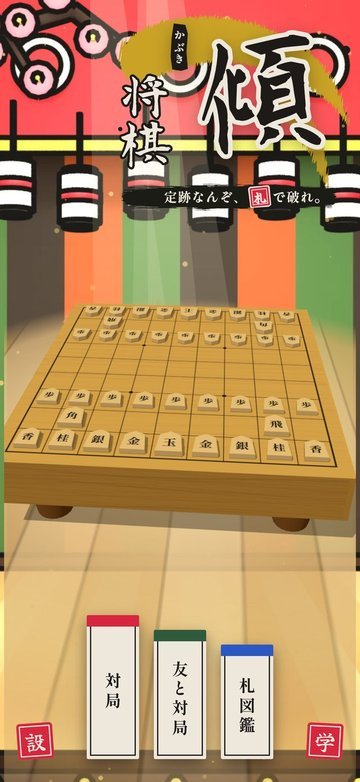
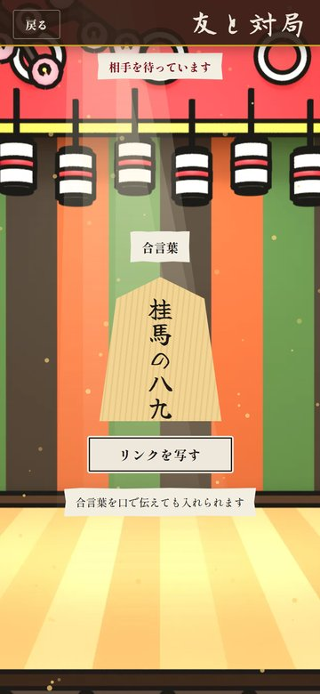
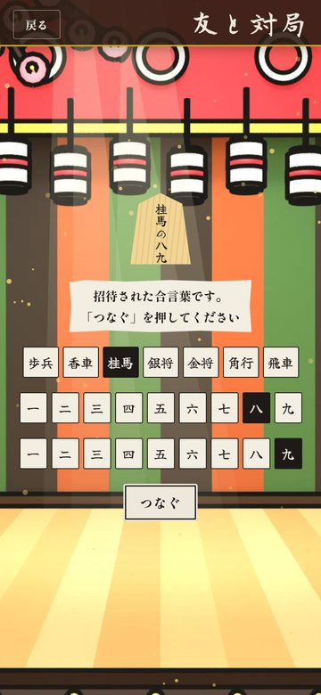
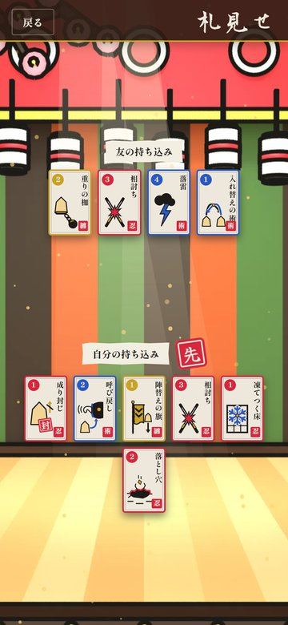
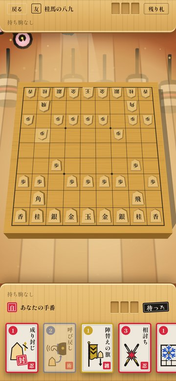
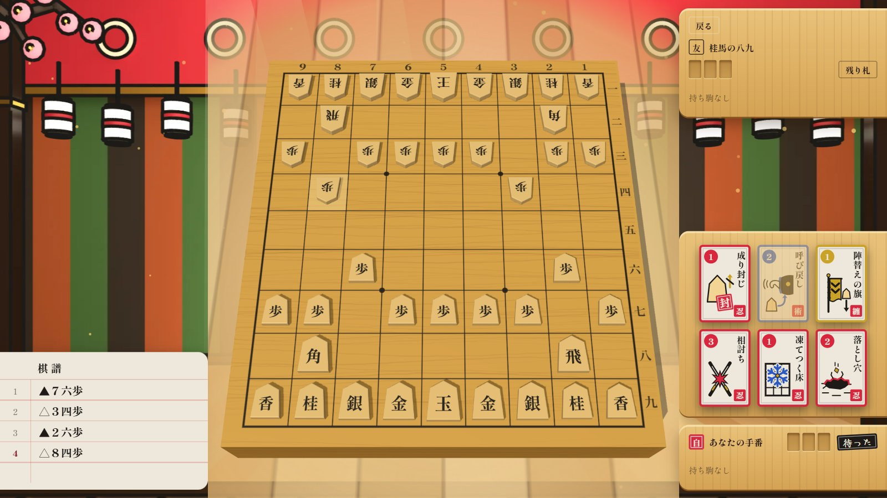

傾将棋が iPhone に来ました：ネットの向こうの友とも、ブラウザ版の人とも指せます
こんにちは、maosun です。
将棋に「札」を足したゲーム「傾将棋（かぶきしょうぎ）」の iPhone 版が、App Store に出ました。無料です。
この記事では、どんなゲームなのかと、iPhone 版で遊べる「友と対局」のことを紹介します。iPhone 版とブラウザ版のあいだでも対局できます。
App Store：https://apps.apple.com/jp/app/id6825358708
ブラウザ版：https://maosun-dev.com/kabukishogi/


どんなゲーム？
駒の動きはふつうの将棋と同じです。ちがうのは、対局の前に「札」を持ち込めることです。
札は術札・忍札・纏札の3つに分かれていて、全部で18枚あります。使うとすぐ効く術札、伏せておく罠の忍札、自分の駒に付ける纏札です。相手の駒に雷を落としたり、落とし穴を伏せたり、駒に鎧を着せたりできます。
もうひとつのちがいは、「詰み」がないことです。王を取ったら勝ち、取られたら負けです。
札のくわしい説明は、前の記事に書きました：傾将棋をブラウザで遊べます
友と対局：つなぎ方は2つ
タイトル画面の「友と対局」から、友だちと指せます。iPhone 版では、つなぎ方を2つから選べます。
- 近くの人と：目の前にいる友だちと、iPhone 2台でつなぎます。ネットにつながっていなくても遊べます。Wi-Fi をオンにしておくとつながりやすくなります（どこかの Wi-Fi につないでいなくても大丈夫です）
- ネットで：離れた所にいる友だちとつなぎます。アカウントを作ったり、サインインしたりする必要はありません
合言葉で誘う
「ネットで」を選んだら、片方が「誘う」、もう片方が「入れる」を押します。
誘う側には、「桂馬の八九」のような合言葉が駒に書かれて出ます。駒の名前と漢数字2つの組み合わせです。


合言葉の伝え方は2つです。
- 招待リンクを送る：「リンクを送る」を押すと、LINE などで招待のリンクを送れます。パソコンでは「リンクを写す」になり、リンクがコピーされます
- 口で伝える：電話や通話中なら、「桂馬の八九だよ」と言うだけでも大丈夫です
入れる側は、駒の名前と漢数字を選んで「つなぐ」を押します。招待リンクから開いた場合は、合言葉がはじめから選ばれています。


つながったら、それぞれ札を選びます。おたがいの持ち込んだ札を見せ合ってから、対局が始まります。




iPhone とブラウザ版でも指せる
「ネットで」は、iPhone 版とブラウザ版のどちらからでもつながります。
友だちが iPhone を持っていなくても大丈夫です。Android のスマホや、パソコンのブラウザでブラウザ版を開いてもらえば、iPhone 版のあなたと対局できます。もちろん、ブラウザ版どうしでも指せます。
ブラウザ版には「近くの人と」はありません。ブラウザ版で友と対局するときは「ネットで」を使ってください。
パソコンの横長の画面なら、盤が大きく出て、棋譜（指した手の記録）も横に並びます。


ひとりでも遊べます
友だちがいなくても、CPU と対局できます。強さは「序幕」の弱い・ふつう・強いと、「大詰」の鬼・師範・傾奇者から選べます。いちばん上の「傾奇者」に勝つと…何かが起きます。
iPhone 版は無料です。広告は、対局の外の画面にだけ出ます。対局中は出ません。
遊んでみてください
App Store：https://apps.apple.com/jp/app/id6825358708
ブラウザ版：https://maosun-dev.com/kabukishogi/
定跡なんぞ、札で破れ。友だちを誘って、ぜひ一局どうぞ！